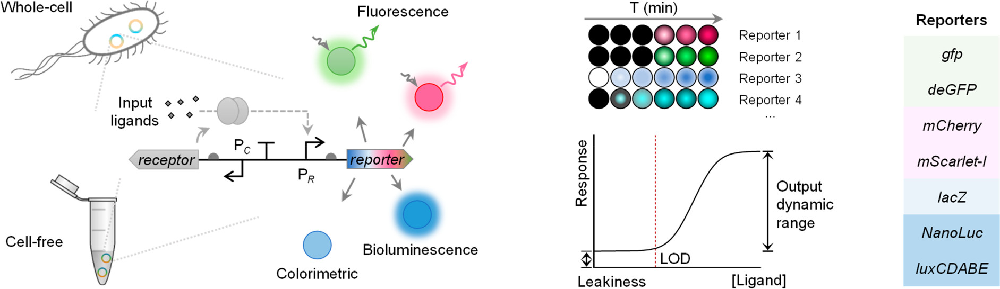
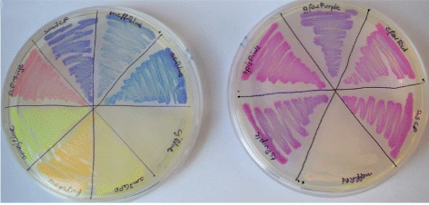
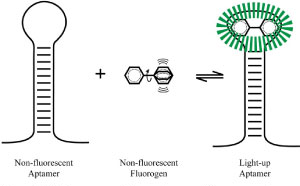

Reporters
Molecules with easily measurable concentration/activity to report gene expression.
Reporters are a vital aspect of genetic circuit design, serving as the end-point of proof-of-concept designs.
However, reporters have quantitative data types that are very distinct from the other regulatory parts in this database, and even from each other.
For this reason, reporter parts do not fit the pipeline of data collection and processing used for the other parts.
Here, we present a list of useful publications and resources related to reporter parts
-
Comprehensive profiling of diverse genetic reporters with application to whole-cell and cell-free biosensors
doiThis article compares the performance of different types of reporters with a mercury-inducible biosensor. The authors analyzed the induction fold, limit of detection, background signal, and response time of fluorescent, colorimetric and bioluminescent reporters.
 -
FPbase
linkThis fluorescent protein database provides references, tables, calculators and interactive charts for data on hundreds of fluorescent proteins, covering a large spectrum of excitation and emission wavelengths. Further, it includes data such as brightness, stability, maturation time and lifetime, along with tools to search and compare proteins. An incredible resource overall.
-
Engineering a palette of eukaryotic chromoproteins for bacterial synthetic biology
doiIn this article, the authors characterize a set of chromoproteins visible to the naked eye. This property is interesting for many applications such as field use, genetic markers and teaching.
 -
The Fluorescent Vegetables in Aptamer Soup
linkThis Addgene blog article has a good description and references of a newer reporter type, fluorescent RNA aptamers. These reporters are especially useful in biocircuits using RNA regulators or implementing any structural change to RNA molecules, such as CRISPR systems, riboswitches and riboregulators. There should be more updated sources (more recent than 2019) but this article stands as a useful introduction.
